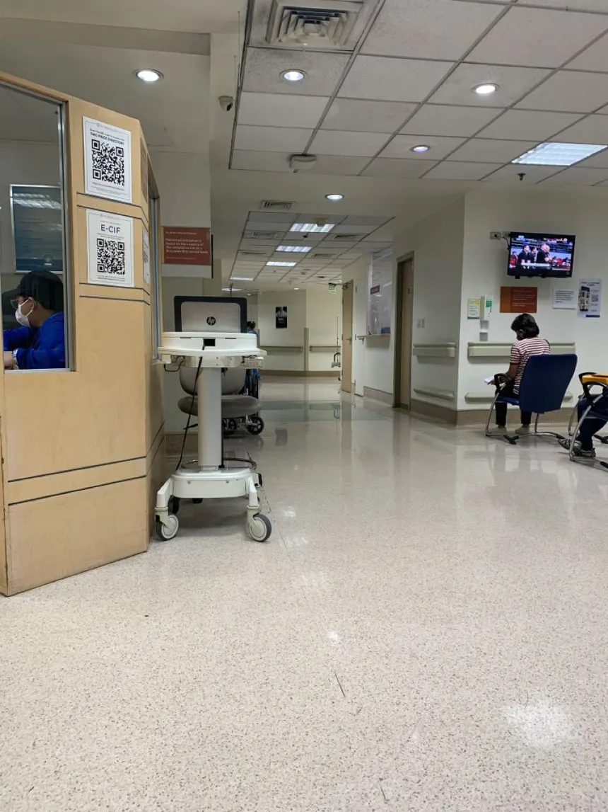
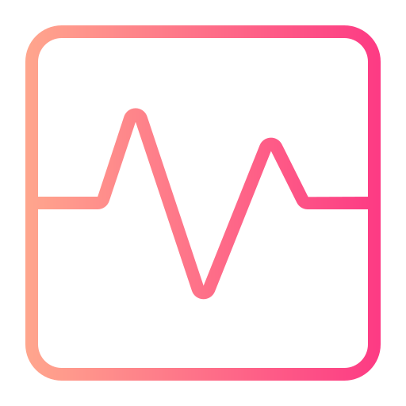
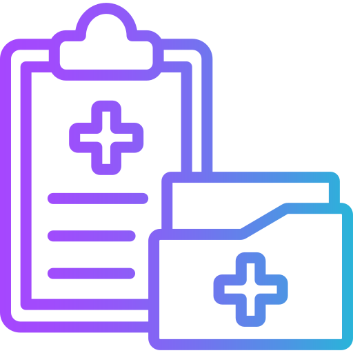
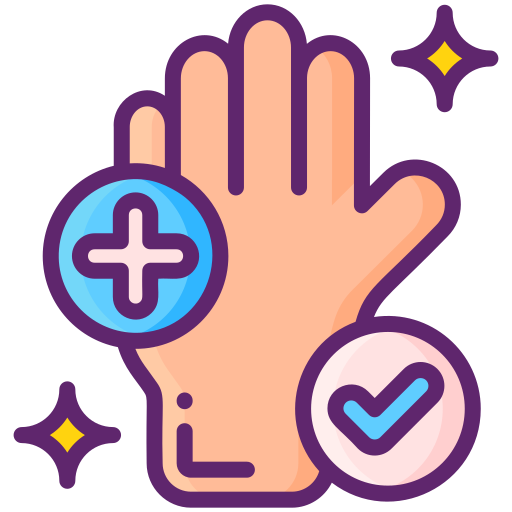
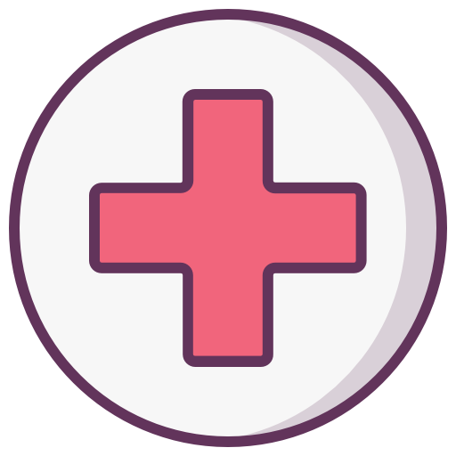

S.A.M.E
Trabajo en el servicio público de emergencias médicas prehospitalarias que funciona principalmente en la Ciudad de San Cristóbal y en la zona.
¿Qué hago en el S.A.M.E?
Traslado seguro
Asistencia inmediata

Valoración inicial
Comunicación

Estabilización
Registro
Trabajo
Hospital San Cristóbal
‘Julio Cesar Villanueva’
Rotación por diferentes servicios: clínica médica, guardia, consultorio externo, quirófano y vacunatorio. Experiencia integral en atención hospitalaria, preparación de pacientes, asistencia en procedimientos y administración de medicación supervisada.

HABILIDADES TÉCNICAS QUE ME DESTACAN.

Toma y control de signos vitales

Administración de medicación

Técnicas de higiene y confort
Curaciones y técnicas de enfermería básica

Toma de muestras y control de exámenes
Registro y comunicación de información clínica